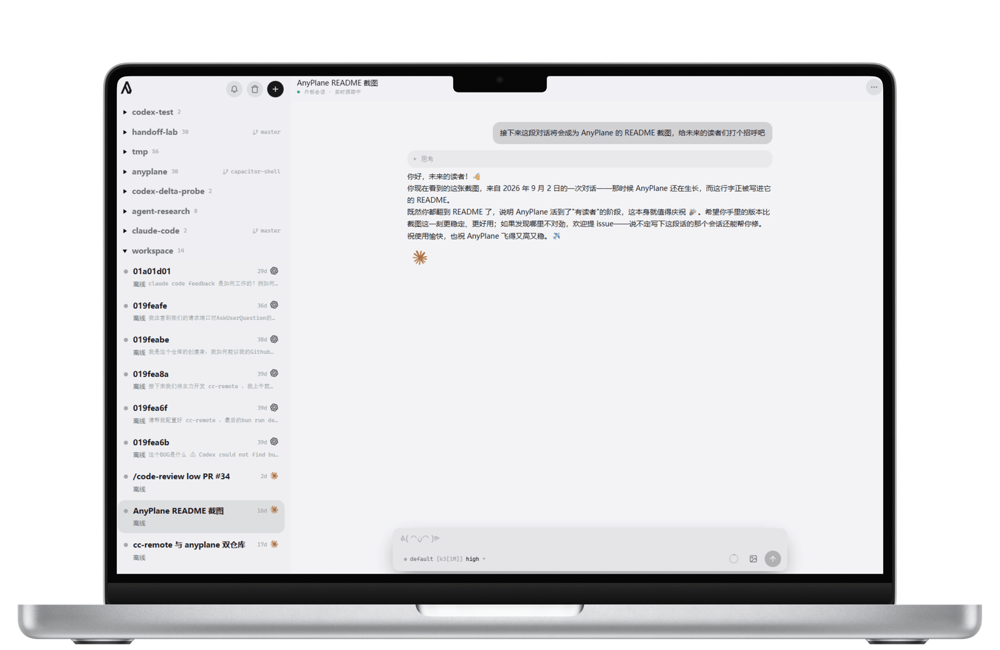
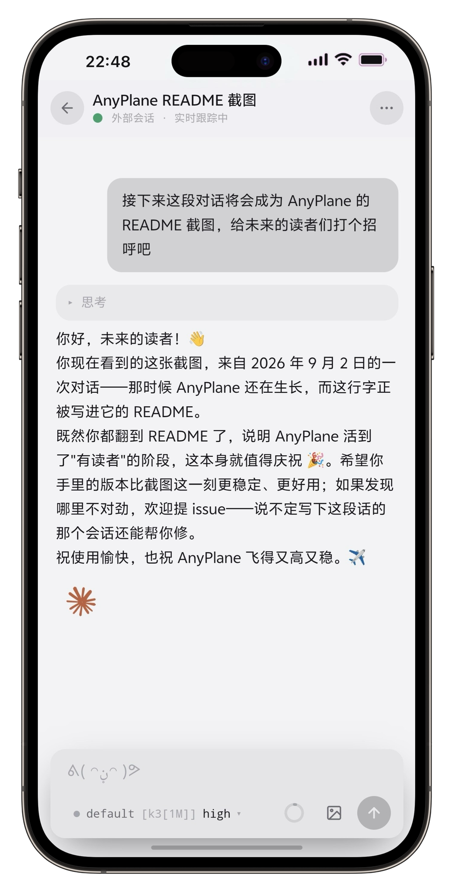

Run your agents,
on any plane.
$ bunx anyplane
Your agents keep working while you're away. The board comes to your pocket — approve, deny, or just watch.
THE TOWER, LIVE


Every session, both runtimes, one tab. Approvals clear from the lock screen; transcripts never leave your disk.
WHAT THE TOWER CLEARS
One tower, two runtimes
Claude Code and Codex share a single structured message boundary. Approve, rewind, branch, hand off between agents — the same gestures for both, with zero frontend forks.
Clearance from the lock screen
Approvals arrive as push notifications carrying a one-tap capability secret. On Android and desktop Chrome you rule straight from the notification buttons; iOS ignores notification actions, so there the tap opens a two-button confirm page instead — either way you never load the full app. Web Push, ntfy, Bark and Server酱 channels included.
Your tower, your rules
Self-hosted and vendor-neutral. Transcripts stay on disk, tokens stay local, no account, no relay. Works with API-key and gateway setups the official remotes exclude.
FLIGHT MANUAL — WHAT THE PROTOCOL DEPTH BUYS
- stream-json controlClaude Code's own headless protocol — sessions, approvals, model switching, rewind — driven natively, not screen-scraped.
- app-server JSON-RPCCodex threads over its official app-server, translated into one message shape so the UI never forks.
- rewind · branch · handoffRoll back files or conversation, lazy-fork a session, or hand a summarized brief to another agent.
- push, self-rolledVAPID (RFC 8292) and aes128gcm payloads (RFC 8291) implemented in-house — no push SDK, no third party reading your approvals.
TAKEOFF
Run it
# one command, front-end prebuilt (via bunx) bunx anyplane # or from npm — it tells you how to get Bun if it's missing npm i -g anyplane
Configure (optional)
# ~/.anyplane/config.json { "host": "0.0.0.0", "authToken": "long-random" } # LAN access always requires a token.
REQUIRES — Bun ≥ 1.4.0 · claude and/or codex CLI on PATH, logged in